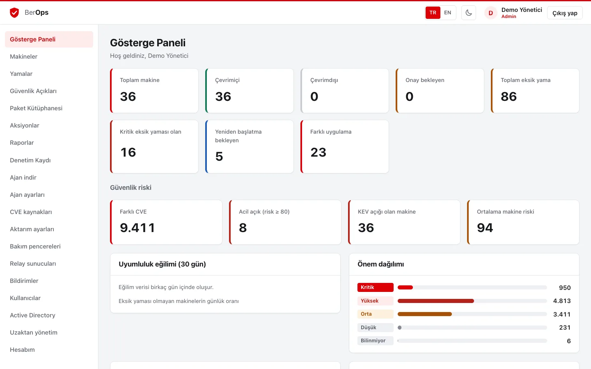
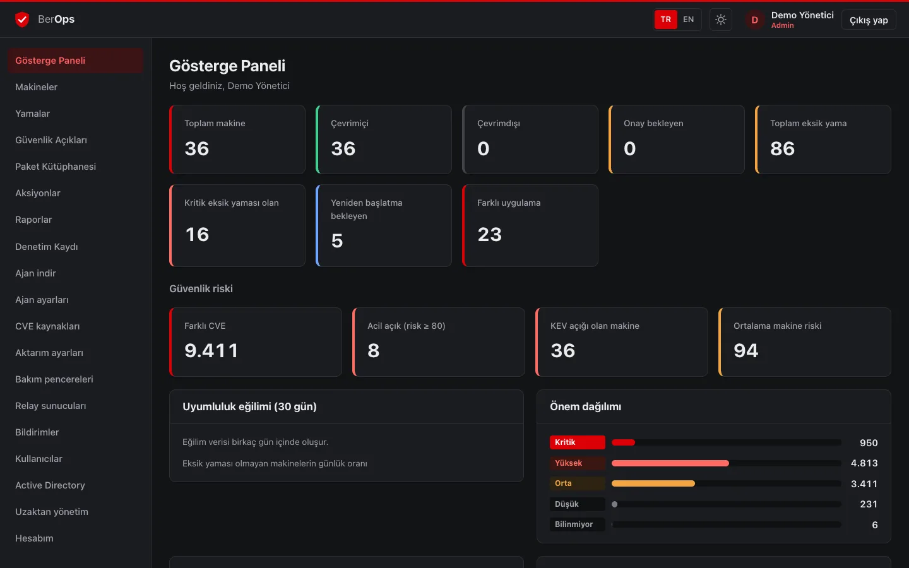
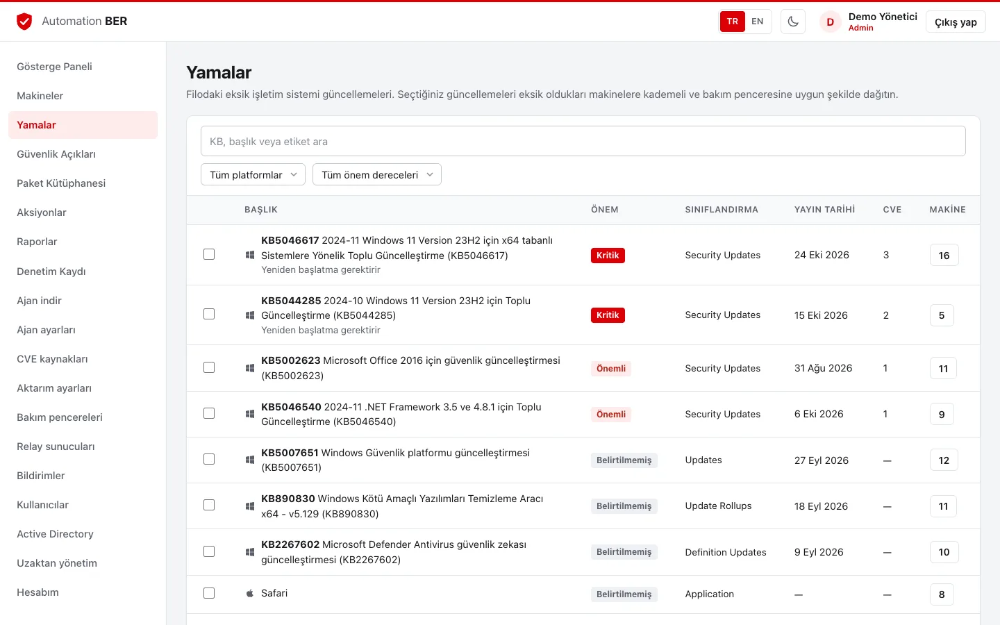
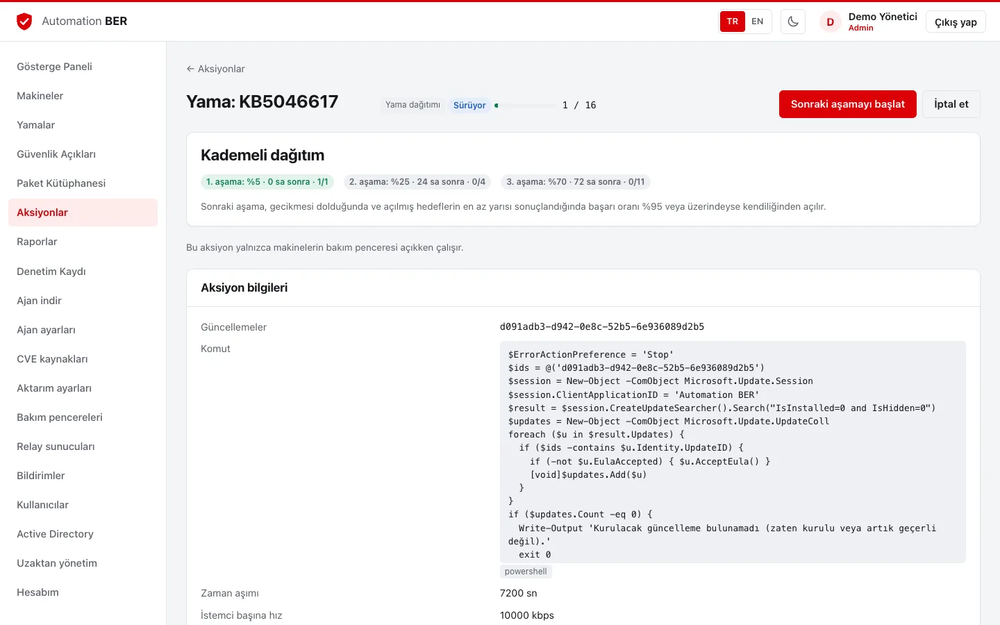
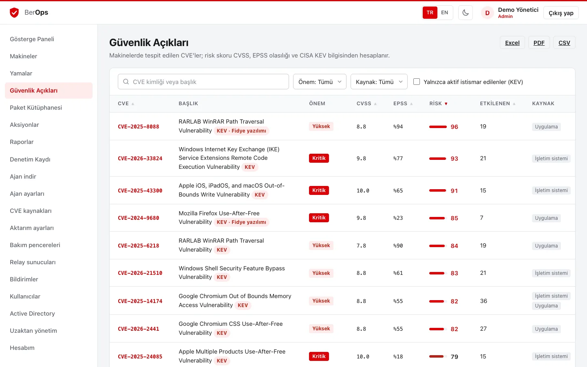
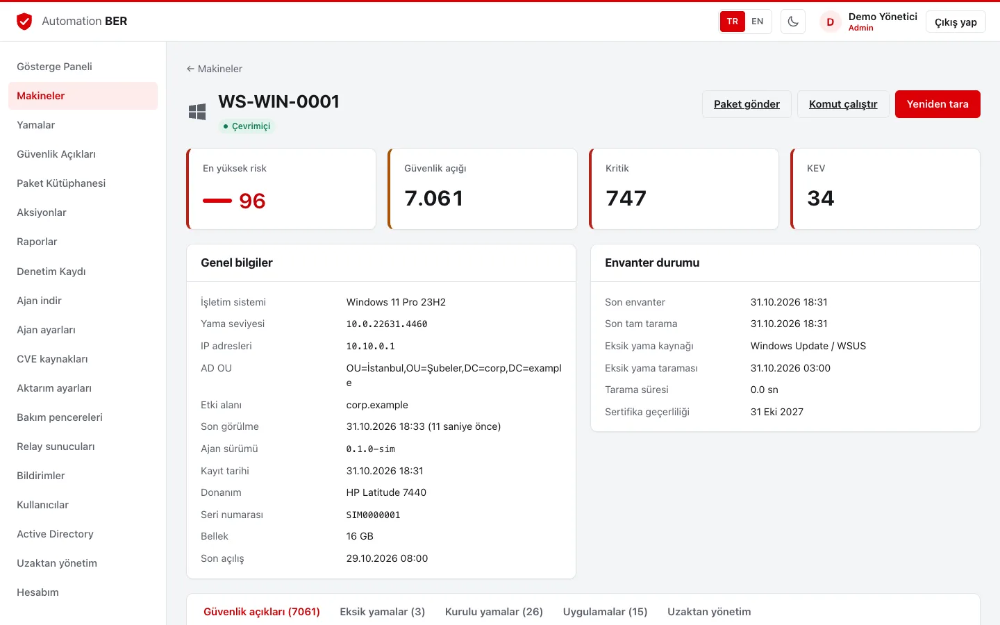
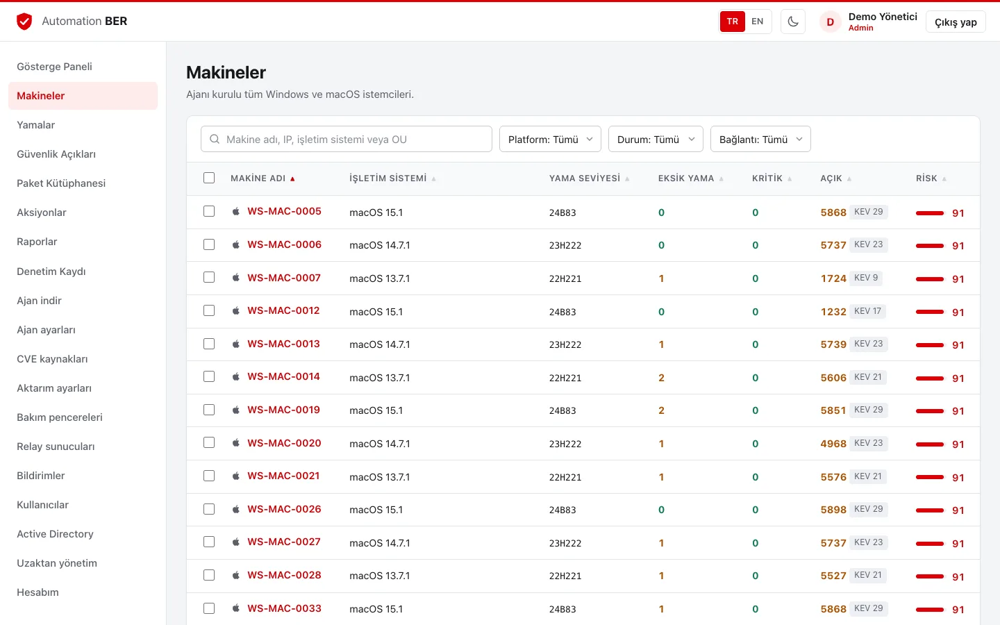

Envanter ve eksik yamalar
Windows Update Agent ve softwareupdate ile eksik yamalar, yama seviyesi (build/UBR), kurulu KB'ler ve üçüncü parti uygulamalar. Değişiklik taraması ve CPU sınırı.
Açık kaynak · Windows ve macOS
Automation BER; filonuzdaki eksik yamaları, üçüncü parti uygulamaları ve CVE'leri ajanlarla toplar, riske göre önceliklendirir ve imzalı, hız sınırlı, kademeli dağıtımlarla kapatır.


Windows Update Agent ve softwareupdate ile eksik yamalar, yama seviyesi (build/UBR), kurulu KB'ler ve üçüncü parti uygulamalar. Değişiklik taraması ve CPU sınırı.
NVD, MSRC, CISA KEV ve EPSS verileriyle eşleştirme; CVSS, istismar olasılığı ve aktif istismara göre 0-100 risk skoru.
İşletim sistemi yamaları, paket kütüphanesi (MSI, EXE, PKG, DMG) ve komutlar. Ed25519 imzalı işler, SHA-256 doğrulama, istemci başına hız sınırı.
Pilot halka ve aşamalar; başarı oranı eşiğin altına düşerse otomatik duraklama. İşler yalnızca makinenin bakım penceresinde çalışır.
LDAPS ile giriş, iç içe gruplardan rol ve OU kapsamı. Yönetici, Teknisyen ve Salt okunur roller; yetki her API çağrısında sunucuda denetlenir.
Canlı CPU, bellek ve disk; servisler ve kayıt defteri. Varsayılan kapalıdır, makine bazında açılır ve her işlem denetim kaydına yazılır.
Şubelerdeki ajanlar relay üzerinden bağlanır; paketler bir kez indirilip doğrulanır ve yerel önbellekten verilir.
PDF, Excel ve CSV raporlar; zamanlanmış e-posta. Teams, Slack ve imzalı webhook bildirimleri; değiştirilemez denetim kaydı.
Tek Go sunucusu konsolu ve ajan API'sini sunar. Ajanlar sunucuya (veya şubedeki relay'e) karşılıklı TLS ile bağlanır; sunucu veriyi PostgreSQL'de tutar.
Görüntüler demo verilerle (sanal ajanlar) alınmıştır.





Windows Server'da sihirbazlı MSI ile ya da Linux'ta Docker Compose ile. PostgreSQL 15 veya üstü gerekir.
msiexec /i AutomationBER-Server-x64.msidocker compose -f deploy/docker-compose.yml --env-file deploy/.env up -dKonsolda "Ajan indir" sayfası, sunucu adresi, kayıt anahtarı ve CA parmak izi gömülü kurulum komutlarını hazırlar.
Windows için sessiz MSI (GPO, SCCM, Intune), macOS için .pkg (MDM).
msiexec /i AutomationBER-Agent-x64.msi /qn SERVER=https://ber.ornek.local:52311 REGKEY=berreg_… CAHASH=sha256:…sudo installer -pkg AutomationBER-Agent.pkg -target / && sudo ber-agent configure -server … -key … -ca-hash …Eksik yamaları ve açıkları inceleyin, bakım penceresi ve kademeli dağıtımla yamaları gönderin, raporları zamanlayın.
| Bileşen | Desteklenen | Kaynak |
|---|---|---|
| Sunucu | Windows Server 2019+ (MSI) · Linux x64/arm64 (Docker, tar.gz) | Önerilen başlangıç: 2 vCPU, 4 GB RAM; PostgreSQL 15+ |
| Windows ajanı | Windows 10/11, Windows Server 2016+ (x64) | Boşta < %1 CPU, ~15-25 MB RAM |
| macOS ajanı | macOS 12+ (Intel ve Apple Silicon) | Boşta < %1 CPU, ~15-25 MB RAM |
| Konsol | Güncel Chrome, Edge, Firefox, Safari | — |
| Ağ | TCP 8443 (konsol), TCP 52311 (ajan, relay) | Ajandan sunucuya tek yönlü bağlantı |
Yalnızca ajandan sunucuya (veya relay'e). Ajanlarda gelen bağlantı için port açmanız gerekmez; işler ajanın yoklamasıyla alınır.
Ajan sunucunun CA parmak izini sabitler ve her iş Ed25519 ile imzalanır. İndirilen dosyalar SHA-256 ile doğrulanır; süresi geçmiş veya başka makineye ait iş reddedilir.
Evet. CVE verileri çevrim dışı klasörden yüklenebilir, Windows eksik yama taraması çevrim dışı wsusscn2.cab ile yapılabilir.
Yalnızca kütüphanedeki hazır paketleri gönderebilir. Serbest komut, yama dağıtımı ve ayarlar yönetici yetkisi ister; kapsam OU'larla sınırlandırılabilir.
Hayır. Genel anahtar ve makine bazındaki özellikler varsayılan kapalıdır; açıldığında da her işlem denetim kaydına yazılır.
Apache License 2.0. Ticari kullanım dahil serbestçe kullanabilir, değiştirebilir ve dağıtabilirsiniz.